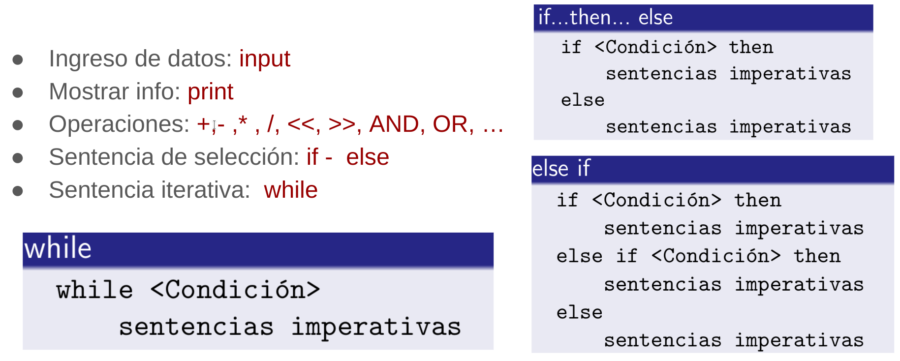
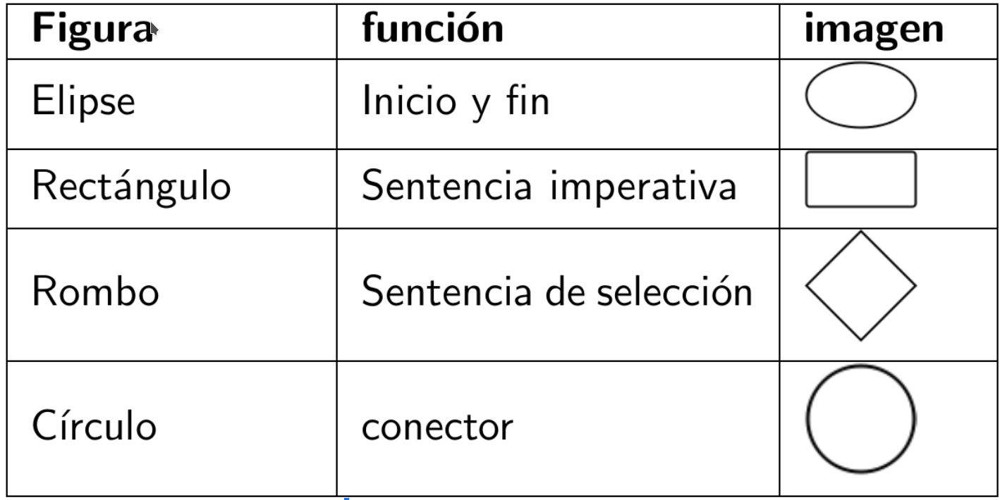

Diplomado en Meteorología y clima
Módulo 5: Programación para la meteorología y el clima
Conceptos básicos de programación
Miguel Ángel Robles Roldán¿Qué es programar?
Conceptos Básicos:
- Programar: dar instrucciones a una computadora
- Computadora: sistema ( electrónico) con capacidades de cómputo (cálculo).
- Computadora programable: computadora capaz de recibir y ejecutar instrucciones.
- Lenguaje de programación: lenguaje con reglas bien definidas que permiten indicar instrucciones a una computadora.
- Programa: conjunto de instrucciones en algún lenguaje de programación
Proceso de programación
- planeación, captura, traducción, interpretación y ejecución .
Planeación
Planear un programa es importante:
- Reduce su tiempo de desarrollo,
- simplifica su implementación y
- facilita su depuración y mejora.
Se debe comenzar con un algoritmo que después debe convertirse a pseudocódigo y/o diagrama de flujo.
Planeación
- Algoritmo: Conjunto ordenado de instrucciones con un fin
- Diagrama de flujo: Representación gráfica de un algoritmo
- Pseudocódigo: Es un intermedio entre algoritmo y un lenguaje de programación formal
Tipos de instrucciones
- Imperativas: son instrucciones de ingreso y salida de datos, así como operaciones (matemáticas, de comparación, de bits, etc)
- Iteración: son instrucciónes que permiten la repetición de un bloque de instrucciones
- Selección: permiten decidir la ruta del programa a partir de una condición
Pseudocódigo
Diagrama de flujo
Actividad
>>> Realizar el algoritmo y Diagrama de Flujo de un programa que realiza la creación de un mapa a partir de datos de salidas de un modelo de manera diaria.
- Asuma que los datos se obtienen de un servidor (no se encuentran en su computadora)
- Incluya una etapa de descarga u obtención de datos
- Tenga en cuenta que los datos pueden no estar disponibles
Captura
En una compuradora, la captura suele hacerse de manera directa,utilizándose a ella misma para capturar, compilar, ejecutar y almacenar los programas.
Tipos de lenguaje de programación
- Por forma de ejecución:
- Interpretado: las instrucciónes interpretan y ejecutan mientras se corre el programa
- Compilado: las instrucciones se interpretan (compilan) previo a la ejecución del programa
- Por nivel de complejidad:
- Bajo nivel: más cercano al lenguaje máquina
- Alto nivel: más cercano al lenguaje humano
Filosofía de Programación
- Metodología en la forma de escribir programas
- lineal: las instrucciones son escritas de manera lineal. Esto es de manera continua
- funcional: el código se agrupa en bloques reusables (funciones)
- Orientada a objetos: abstrae la programación en objetos, estos contienen funciones y variables